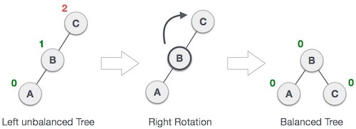
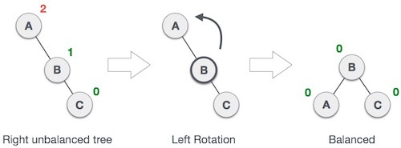
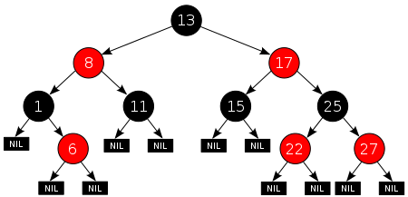
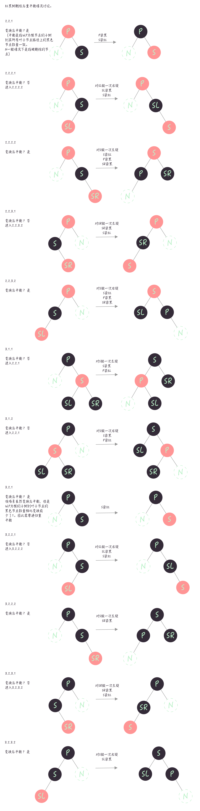

一、二叉查找树
二叉查找树是比较基础的一种结构，我一般比较习惯叫它排序二叉树或堆排。具体的定义可以参考 维基百科
对于一棵排序二叉树，主要有以下几个操作：
| 操作 | 时间复杂度 |
|---|---|
| 查找 | 时间复杂度等于树高，期望是 $O(log n)$，最差情况是 $O(n)$，即树退化成了链表 |
| 插入 | 复杂度和查找相同，先查找到新元素的位置，再 $O(1)$ 插入即可 |
| 删除 | 复杂度和查找相同，先查找到元素的位置，再 $O(1)$ 删除即可 |
作为堆排，其时间复杂度是 $O(n log n)$ ，即n次插入操作。之后再进行一次中序遍历即可输出排序好的数列。
源码实现： https://github.com/yak2p/trees/tree/master/binary-search-tree
二、平衡二叉树
1、什么是平衡树
平衡树是对二叉查找树的一种改进。目的是通过平衡树的左右子树，使所有叶子节点的深度趋于平衡，即树高等于 $O(log n)$。以此使查找的复杂度尽量趋近于 $O(log n)$。 具体的定义还是参考维基百科
平衡二叉树的定义如下：
- 左右子树的高度差小于等于 1。
- 每一个子树均为平衡二叉树。
2、AVL树
AVL树是最早被发明的自旋平衡二叉查找树。在AVL树中，任一节点对应的两棵子树的最大高度差为1，因此它也被称为高度平衡树。查找、插入和删除在平均和最坏情况下的时间复杂度都是 $O(log n)$
AVL树的实现是通过记录平衡因子（Balance Factor）来判断树是否平衡。
平衡因子： 左子树的高度减去它的右子树的高度
当一个节点的平衡因子不为 -1、0、1时，即该节点的左子树和右子树的高度差超过1，则认为以该节点为根的子树不平衡。
当插入和删除一个节点之前，我们认为树总是平衡的。
当插入和删除一个节点之后，如果导致树变得不平衡，则通过旋转操作来将树重新平衡。
因此，对于AVL树，在任何时刻，平衡因子的绝对值不可能>2。
3.1 旋转
3.1.1 右旋
可以参考 维基百科
本段图片及部分文字来源于 知乎-详解 AVL 树（基础篇）
有个演示AVL树过程的网站，挺有意思的： AVL-Tree

如上图，将B节点和C节点进行一次父子交换，B成为新的根节点，C成为B的右孩子，此时树达到平衡。该操作称为右旋（Right rotation）。当B节点旋转前就存在右孩子时，旋转后B先前的右孩子成为C的左孩子。
3.1.2 左旋

如上图，将B节点和A节点进行一次父子交换，B成为新的根节点，A成为B的左孩子，此时树达到平衡。该操作称为左旋（Left rotation）。当B节点旋转前就存在左孩子时，旋转后B先前的左孩子成为A的右孩子。
3.2 不平衡情况讨论
我们定义以下符号：
- 单个大写字母表示一个节点，如A表示节点A
- BF(A)： 节点A的平衡因子
- 单个字母以及一对括号表示一棵平衡二叉树，括号中的数字表示这棵树的高度。如B(n)表示以B为根节点高度为n的平衡树。
对于一棵树（该树也可能是其他树的子树），不平衡的情况有以下两种：
1. BF(A) = 2
A
/ \
B(n+2) C(n)
2. BF(A) = -2
A
/ \
B(n) C(n+2)
我们先看 BF(A)=2 的情况：
对B(n+2)进行展开有以下三种情况，以及分别进行旋转操作后可以达到树平衡：
1. BF(B) = 0
A
/ \
B C(n)
/ \
D(n+1) E(n+1)
我们对A节点其进行一次右旋，得到
B
/ \
D(n+1) A
/ \
E(n+1) C(n)
旋转后D的高度为n+1，A的高度为n+2，树平衡。
2. BF(B)=1
A
/ \
B C(n)
/ \
D(n+1) E(n)
我们对A节点其进行一次右旋，得到
B
/ \
D(n+1) A
/ \
E(n) C(n)
旋转后D的高度为n+1，A的高度为n+1，树平衡。
3. BF(B)=-1
A
/ \
B C(n)
/ \
D(n) E(n+1)
我们对以B节点为根的子树的进行一次左旋，得到（其中E1为E之前的左子树，E2为E之前的右子树，E1/E2
的高度为两者都是n，或其中一个是n，一个是n-1。我们假设两个都是n，对结果没有影响）：
A
/ \
E C(n)
/ \
B E2(n)
/ \
D(n) E1(n)
再对A节点进行一次右旋，得到
E
/ \
B A
/ \ / \
D(n) E1(n) E2(n) C(n)
旋转后B 和 A的高度都为n+1，树平衡。
根据以上我们可以得到：
BF(A)=2,BF(B)=0或1时，需要对节点A做一次右旋可达到平衡，BF(A)=2,BF(B)=-1时，需要先对节点B做一次左旋，再对节点A做一次右旋，可达到平衡
同理，对于BF(A)=-2我们可以推出：
BF(A)=-2,BF(C)=0或-1时，需要对节点A做一次左旋可达到平衡BF(A)=-2,BF(C)=1时，需要先对节点C做一次右旋，再对节点A做一次左旋，可达到平衡
3.3 实现
根据3.2得到的结论，实现起来就非常简单了：
| 操作 | 流程 | 时间复杂度 |
|---|---|---|
| 查询 | 排序二叉树一样直接进行查找。 | 因为树是平衡的，树高等于 $log n$，所以时间复杂度为 $O(log n)$ |
| 插入 | 和二叉查找树一样，先递归查找进行插入，插入完成后再回溯更新路径上所有节点的平衡因子，当发现某个节点的平衡因子为2或-2时，根据3.2的结论以该节点为A，进行旋转。旋转完成之后继续回溯更新平衡因子。 | 查找和插入的时间复杂度为 $O(log n)$，旋转至平衡的时间复杂度为常数级别。 |
| 删除 | 和二叉查找树一样，先递归查找进行删除。删除完该节点后再回溯更新路径上所有节点的平衡因子，当发现某个节点的平衡因子为2或-2时，根据3.2的结论以该节点为A，进行旋转。旋转完成之后继续回溯更新平衡因子。 | 查找和删除的时间复杂度为 $O(log n)$，旋转为的时间复杂度为常数级别。 |
代码实现： avl-tree
三、B树（B-树）
1 什么是B树
B树是一种自平衡的树，能够保持数据有序。这种数据结构能够让查找数据、顺序访问、插入数据及删除的动作，都在对数时间内完成。B树，概括来说是一个一般化的二叉查找树（binary search tree）一个节点可以拥有2个以上的子节点。与自平衡二叉查找树不同，B树适用于读写相对大的数据块的存储系统，例如磁盘。B树减少定位记录时所经历的中间过程，从而加快存取速度。B树这种数据结构可以用来描述外部存储。这种数据结构常被应用在数据库和文件系统的实现上。
B树在算法时间复杂度上并不优于平衡二叉树，但对于文件系统索引的查找，因为无法将完整索引都加载到内存中再进行查找，因此每次查找都要对应一次磁盘IO，而一次磁盘IO的耗时是远高于内存比较的。所以引入B树减少了平衡搜索树的高度，减少了IO次数，也就提高了整体的性能。
这个网站上可以模拟B树的插入删除操作，非常不错: https://www.cs.usfca.edu/~galles/visualization/BTree.html
一棵M（M>=2）阶的B树需要满足以下特点：
- 树中每个节点最多含有M个孩子（children），M-1 个元素（elements）。
- 除根节点和叶节点外，其他每个节点至少有 $CEIL(M/2)$ 个孩子。CEIL()为向上取整
- 这个是因为当一个节点已经含有 $M-1$ 个元素时，此时再插入一个元素会触发节点拆分。因为要将中间元素插入到父节点，因此仍然只有 $M-1$ 个元素被拆分成两个节点。
- 当M为偶数时，新的节点一个有 $M/2$ 个元素（即有 $M/2+1$ 个孩子），另一个有 $M/2-1$ 个元素（即有$M/2$个孩子）。
- 当M为奇数时，新的节点每个有 $(M-1)/2$ 个元素（即 $(M/2+0.5) $个孩子）。
- 因此每个中间节点至少有 $CEIL(M/2)$ 个孩子
- 这个是因为当一个节点已经含有 $M-1$ 个元素时，此时再插入一个元素会触发节点拆分。因为要将中间元素插入到父节点，因此仍然只有 $M-1$ 个元素被拆分成两个节点。
- 从上一点可得，每个中间节点至少有 $CEIL(M/2)-1$个元素。
- 当树的高度>=2时，根节点至少有两个孩子。
- 一个拥有k个孩子的非叶子节点有 k-1 个 key。
- 所有叶子节点都在同一层
关于B树，wiki 百科介绍的非常详细，建议直接参考： https://en.wikipedia.org/wiki/B-tree
2 实现、
2.1 查找
- 类似于二叉搜索树，从根节点往下进行查找。在查找一个节点时，可以通过二分查找去查是否有匹配的元素或者要进入哪个子节点。
2.2 插入
- 首先从根节点开始往下查找，直到找到一个匹配的叶子节点。
- 如果该叶子节点的元素数量小于最大元素数量（M-1），则将该元素按顺序插入该叶子节点。结束插入。
- 否则该叶子节点的元素数量为M-1，需要按以下步骤将该叶子节点拆分为两个节点：
- 从该叶子节点的所有元素以及新元素中选取中位元素。
- 将小于中位元素的元素放入新的左边节点，大于中位元素的元素放入新的右边节点。
- 将中位元素插入原叶子节点的父亲节点（该操作可能触发父亲节点的拆分），如果原叶子节点为根节点，则创建一个新的根节点作为两个新节点的父亲。
另一种插入算法是从根节点往下查找时，即对满的节点进行拆分。这样可以保证最后插入时不需要再进行拆分，可以避免重新读取祖先节点（如果祖先节点在不同的存储页，该操作的代价是比较昂贵的）。不过这种算法需要保证M为偶数，因为M为偶数时，拆分后的新节点才能满足每个新节点至少有M/2个孩子。
2.3 删除
有两种删除的策略：
- 查找到要删除的元素，将其删除，之后重新平衡（rebalance）树。或者：
- 从根节点往下查找，在查找每个节点前，重新构造来保证如果其中某个元素被删除时，不需要再进行重新平衡。
我们主要讨论第一种策略：
在删除一个元素时，主要需要考虑以下两点：
- 被删除的元素是中间节点的元素。
- 删除一个元素，可能导致元素所在节点的元素数量小于最小元素数量。
删除算法如下：
- 查找到要删除的元素所在的节点。
- 如果该节点为叶子节点，直接将该元素删除。如果删除后，该叶子节点的元素数量小于最小元素数量，则执行Rebalance算法。
- 如果该节点为中间节点，选取该元素的左孩子的最大元素或右孩子的最小元素，将其替换要删除的元素，之后将其删除（新的删除流程）。
Rebalance算法：
- 如果缺陷节点（节点元素数量小于最小元素数量）的右兄弟节点存在且拥有超过最小元素数量的元素，则进行左旋：
- 将父亲元素插入到缺陷节点的元素末尾。
- 将右兄弟的最小元素替换父亲元素。
- 将右兄弟的最小元素删除。
- 否则如果缺陷节点的左兄弟存在且拥有超过最小元素数量的元素，则进行右旋：
- 将父亲元素插入到缺陷节点的元素开头。
- 将左兄弟的最大元素替换父亲元素。
- 将左兄弟的最大元素删除。
- 否则将缺陷节点和一个兄弟节点以及他们的父亲元素合并成一个新的节点：
- 将父亲元素复制到左节点的末尾
- 将右节点的所有元素复制到左节点的末尾
- 将右节点和父亲元素直接删除。
- 如果父亲节点为根节点，且父亲元素被删除后，没有其他元素，则将父亲节点删除。新节点直接提升为根节点。
- 如果父亲节点的元素数量小于最小元素数量，则重新平衡父亲节点。
3 应用
3.1 数据库
- 通常情况下，排序和查找算法的时间复杂度取决于对比的次数。一个二叉搜索树的查找和插入的时间复杂度为 $O(log_2N)$。 但是对于大型的数据库，其数据都是保存在硬盘中，从硬盘读取数据的耗时远大于对比数据的耗时。从硬盘读取数据的耗时主要由寻道时间（0-20ms）和旋转延迟(7200RPM的硬盘延迟大概是8.33ms)组成，简单假设从硬盘读取耗时为10ms。在最差的情况下，从一棵存储在硬盘中的二叉搜索树（100万个节点）查找一个元素，单读取硬盘的耗时为 $[log_2N]*10ms=0.2s$。不过实际情况不会这么差，因为最后几个节点的元素会在同一个存储块中，实际可以减少几次硬盘读取操作。
- 通过建立辅助索引（Auxiliary Index）可以减少硬盘读取操作。预期的读盘操作数量为 $log_bN$，其中
b是指每个存储块中元素的数量。但是引入辅助索引，会使插入和删除操作的复杂度变高，可以通过在存储块中预留空间等方式降低代价。 - B树其实就是上面两点的实现。
- 保证元素的有序查找
- 通过降低树的高度来减少读盘次数
- 每个节点的元素数量在 [M/2] , M 之间，预留了空间来加速删除和插入操作。
- 通过Rebalance保证索引的平衡
四、B+树
B+数是B树的一个变种，B+树的每个节点只包含key，不包含value，且所有Key都会保存到叶子节点，在叶子节点每个元素会有一个指针指向Value值，value值是个链表，用于提升连续查找的性能。
B+树的最大价值是在块存储系统中提高检索效率。和B树一样，B+树每个节点会有非常多的子节点，从而减少树的高度，进而减少硬盘读取的IO次数。
B+树模拟： https://www.cs.usfca.edu/~galles/visualization/BPlusTree.html
InnoDB
- InnoDB表数据文件本身就是主索引，因为叶子节点包含完整的数据，这种索引叫做聚集索引，所以InnoDB必须要有主键。
- 而辅助索引的data保存的是主键的值，因此通过辅助索引查到主键后，需要再到主索引按主键查完整的数据。
- 因此对于InnoDB，建议使用长度较短的主键，可以减少辅助索引的大小。其次建议使用单调的主键，因为这样可以减少插入时导致的Rebalance操作。
为什么MySQL使用B+树而不使用哈希或者B树
- 虽然哈希在知道Key的时候，查询效率可以认为是$O(1)$，但对于范围查询或排序性能非常差，只能进行全表扫描。
- B树和B+树查询效率在$O(log_dN)$，但由于树本身是有序的，所以范围查询和排序的性能可以达到$O(m)$
- 而B+树由于在叶子节点保存了下个数据的指针，所以当范围查找时，只需要通过树查找到第一个值，再通过链表即可查到所有满足要求的值，时间复杂度为$O(log_dN+m)$。而B树则要多次通过树查询，时间复杂度为更高，且由于需要回溯父节点可能导致需要再从磁盘加载数据，增加额外的随机I/O。
B树和B+树的应用
- 主要应用于硬盘存储，例如需要持久化存储的数据库或者操作系统的文件系统。因为B树和B+树的主要优点即是在二叉搜索树的基础上减少了树的高度，进而减少了磁盘IO次数。
五、红黑树
1 什么是红黑树
wiki: https://zh.wikipedia.org/wiki/%E7%BA%A2%E9%BB%91%E6%A0%91
红黑树是一种自平衡二叉查找树，典型的用途是实现关联数组。其查找插入删除的时间复杂度为$O(log n)$。相比于AVL树，红黑树牺牲了部分平衡性以减少插入/删除时少量的旋转操作，整体来说性能要优于AVL树。
红黑树在二叉查找树的一般要求外，还需要满足：
- 节点是红色或黑色
- 根是黑色
- 所有叶子都是黑色（叶子节点为NIL节点）在本文中，所有的叶子节点都为NIL节点，不包含数据，单纯充当树在此结束的指示。
- 每个红色节点必须有两个黑色的子节点。（从每个叶子到根的所有路径上不能有两个连续的红色节点）
- 从任一节点到其每个叶子的所有简单路径都包含相同数目的黑色节点。
下面是一个具体的红黑树的图例：：

在很多树数据结构的表示中，一个节点有可能只有一个子节点，而叶子节点包含数据。用这种范例表示红黑树是可能的，但是这会改变一些性质并使算法复杂。为此，本文中我们使用"nil叶子"或"空（null）叶子”，如上图所示，它不包含数据而只充当树在此结束的指示。这些节点在绘图中经常被省略，导致了这些树好像同上述原则相矛盾，而实际上不是这样。与此有关的结论是所有节点都有两个子节点，尽管其中的一个或两个可能是空叶子。
这些约束确保了红黑树的关键特性：
- 从根到叶子的最长的可能路径不多于最短的可能路径的两倍长。因为从根节点到叶子节点的最短路径为全部都是黑色节点，假设这个路径长度为n。最长路径为一红一黑交错，因此最长路径为2n。
2 实现
2.1 查找
查找和二叉查找树查找操作相同，不赘述。
2.2 插入
注：我个人习惯称呼旋转为对旋转后成为最顶层的节点N做旋转，例如对N做一次左旋，则表示N为其父亲P的左孩子，旋转后N替代P的位置，P成为N的右孩子。该称呼方法和wiki上不同
先以二叉查找树的插入方式插入一个节点并标记为红色。（如果设为黑色，就会导致根到该叶子的路径上的黑色节点数目比到其他叶子节点的路径多一个，这种情况是很难调整的。）
考虑以下情况：
- 新节点是树根。将该节点颜色调整为黑色。
- 新节点的父节点是黑色。符合条件。
- 新节点的父节点是红色，父节点的兄弟节点存在且也是红色。将父节点和父节点的兄弟节点调整为黑色，将祖父节点调整为红色。此时，如果祖父节点是根节点，或者祖父节点的父节点是红色，则会违背约束。所以需要递归对祖父节点进行调整（把祖父节点当做新节点进行各情况检查）。
- 新节点的父节点是红色，且父节点没有兄弟节点或者兄弟节点为黑色。
- 父节点P是祖父节点G的左孩子，新节点N是父节点P的右孩子。则对新节点N做一次左旋，再做一次右旋。之后将N调整为黑色，将G调整为红色。
- 父节点P是祖父节点G的左孩子，新节点N是父节点P的左孩子，则对父节点P做一次右旋，之后将P调整为黑色，将G调整为红色。
- 父节点P是祖父节点G的右孩子，新节点N是父节点P的左孩子。则对新节点N做一次右旋，再做一次左旋。之后将N调整为黑色，将G调整为红色。
- 父节点P是祖父节点G的右孩子，新节点N是父节点P的右孩子。则对父节点P做一次左旋，之后将P调整为黑色，将G调整为红色。
2.3 删除
在二叉查找树中，删除一个有两个儿子节点可以转换成删除一个只有一个儿子的节点的问题：
- 如果要删除的节点N有两个儿子节点，则用N的左子树中最靠右的节点或右子树最靠左的节点的值替代N的值，之后将值用来替代的节点删除（该节点最多只有一个儿子节点）。
以上的儿子节点指那些非NIL叶节点的孩子节点。
因此对于红黑树，我们只讨论要删除的节点最多只有一个儿子节点的情况:
- 如果被删除的节点是红色节点，则直接用它的孩子（最多只有一个孩子）替代它（因为其父亲和儿子必为黑色）。
- 如果被删除的节点是黑色，而它的儿子是红色。则将其儿子调整为黑色并替代它。
- 如果被删除的节点是黑色，而它的儿子也是黑色。（这种情况下该节点的两个儿子都是NIL叶子节点），则直接将该节点删除，但此时可能会出现不平衡的情况，需要进行rebalance。我们用一个空的叶子节点替换被删除的节点并称呼其为N（在下列描述的情况里，通常N是一个空的叶子节点。但当出现递归rebalance时，N实则为一个右孩子为红色的黑色节点），N的父亲为P，N的兄弟为S，S的左儿子为SL，S的右儿子为SR。
-
1 P为空，即N为根节点。符合约束。
-
2 P为红色
- 2.1 S为红色，不可能出现这种情况
- 2.2 S为黑色：
- 2.2.1 S的两个儿子都为空（或黑色，在3.2.1将P作为N重新讨论时，则所有情况中的空叶子都替换为黑色节点。其实空叶子节点也是黑色节点），则将P染黑，S染红。树平衡。
- 2.2.2 N为P的左孩子
- 2.2.2.1 SL为红色，SR为空叶子。对SL做一次右旋，然后把SL染黑，S染红。进入2.2.2.2
- 2.2.2.2 SL为红色或空叶子，SR为红色。对S做一次左旋，之后将S染红，P染黑，SR染黑。树平衡。
- 2.2.3 N为P的右孩子
- 2.2.3.1 SL为空叶子，SR为红色。对SR做一次左旋，然后把SR染黑，S染红。进入2.2.3.2
- 2.2.3.2 SL为红色，SR为红色或空叶子。对S做一次右旋，之后将S染红，P染黑，SL染黑。树平衡
-
3 P为黑色：
- 3.1 S为红色。（此时S必有两个黑色的非空儿子节点）
- 3.1.1 N为P的左儿子，我们对S做一次左旋，然后将S染为黑色，将P染为红色。进入2.2.1
- 3.1.2 N为P的右儿子，我们对S做一次右旋，然后将S染为黑色，将P染为红色。进入2.2.1
- 3.2 S为黑色。
- 3.2.1 S的两个儿子都为黑色。将S染红，将P作为新的N重新从1开始讨论情况
- 3.2.2 N为P的左孩子
- 3.2.2.1 SL为红色，SR为空叶子。对SL做一次右旋，然后把SL染黑，S染红。进入3.2.2.2
- 3.2.2.2 SL为红色或空叶子，SR为红色。对S做一次左旋，SR染黑。树平衡。
- 3.2.3 N为P的右孩子
- 3.2.3.1 SL为空叶子，SR为红色。对SR做一次左旋，然后把SR染黑，S染红。进入3.2.3.2
- 3.2.3.2 SL为红色，SR为红色或空叶子。对S做一次右旋，SL染黑。树平衡
- 3.1 S为红色。（此时S必有两个黑色的非空儿子节点）
-
删除操作是我认为红黑树中最难理清的部分。为了便于理解，以上重平衡的情况讨论是展开后的，其实一些情况可以归并在一起的。在wiki中将重平衡情况归并到了6种。
具体变换可以参考上文查看图片，图片中均只画出N被删除时，S的孩子情况，这样便于理解。如果是从3.2.1将P作为新的N重新讨论时，S的空孩子也有可能是一个非空叶子的黑色节点：
代码实现： red-black-tree

五、LSM （Log Structured Merge Trees）
LSM的设计目的是提供比传统B+树更好的写操作吞吐量，通过消去随机的本地更新操作来达到这个目标。
基于 顺序读写磁盘（SATA或SSD）快于随机读写主存，且快了至少三个数量级。
算法描述： 将写操作顺序的保存到一些相似的有序文件（sstable）中，因为文件是有序的，之后的查找也会很快。文件是不可修改的，更新操作只会append到文件中。为了提高读的性能，通过周期性的合并来减少这些文件的个数。
写： 当一些更新写入操作到达时，他们会被写到内存缓存中（memtable），memtable使用树结构来保持key的有序，在大部分实现中，memtable会通过WAL的方式备份到磁盘，用来恢复数据，防止数据丢失。在memtable内数据达到一定规模时，数据会被刷新到磁盘上的一个新文件。系统会周期性的执行合并操作（compaction），将一些文件合并到一起，移除重复的更新或删除记录，以此提高读性能。
读： 当一个读操作请求到达时，系统先检查memtable，如果没有找到，则逆序检查sstable文件，直到key被找到。因为sstable内的数据是有序的，因此在sstable中查找的时间复杂度是$O(log N)$。在sstable数量很多时候，可以通过建立布隆过滤器来判断是否需要检查某个sstable。
LSM相比于B+树、哈希表等存储结构，利用顺序写的优势，极大提高了写操作的性能。但同时牺牲了读的性能。因此非常适用于读写平衡或读少写多的场景，如时序数据库等。
SSTable (Sorted String table)
- On-disk SSTable indexes are always loaded into memory
- All writes go directly to the MemTable index
- Reads check the MemTable first and then the SSTable indexes
- Periodically, the MemTable is flushed to disk as an SSTable
- Periodically, on-disk SSTables are “collapsed together”
六、TSM (Time Structured Merge Tree)
Write Ahead Log (WAL)
WAL 用于保证在进程重启或出现非预期错误时不丢失数据。其实现是：
- 当写入请求到达时，将请求append到WAL文件的末尾。
- 数据通过
fsync()写入磁盘。 - 更新缓存Cache。
- 响应写入请求。
Cache
Cache 是当前WAL文件在内存的中的一份副本。
TSM
TSM根据series将数据进行分组并按时间排序，为了提升效率，TSM对同一个series中的数据只保存差量。当文件写入TSM文件后，WAL和cache会进行清空。
本文地址